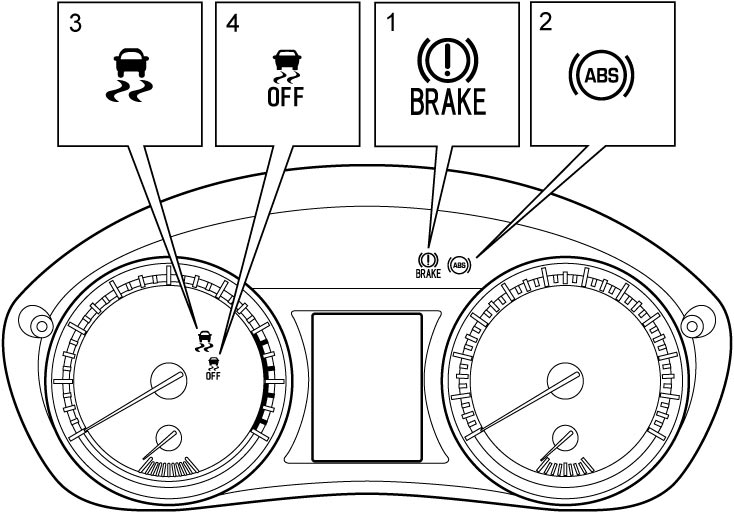

4F
| OBD System Description |
ESP® control module is built in ESP® hydraulic unit / control module assembly and has the following functions.
Self-Diagnosis Function
ESP® hydraulic unit / control module assembly monitors each input and output signal. When ESP® hydraulic unit / control module assembly detects any malfunction, ABS warning light (2), EBD warning light (brake warning light) (1), ESP® warning light (3), and/or ESP® OFF light (4) are turned ON to inform the driver of the abnormality.
•When ignition is set “ON”, ABS warning light, EBD warning light (brake warning light), ESP® warning light and ESP® OFF light turn ON for 2 seconds to check its circuit.
•When no abnormality is detected (the system is in good condition), these lights turn OFF after 2 seconds. However, when parking brake is applied, EBD warning light (brake warning light) remains ON.
•When an abnormality in the system is detected, ABS warning light, EBD warning light (brake warning light), ESP® warning light and/or ESP® OFF light are turned ON and DTC is stored in ESP® hydraulic unit / control module assembly.

•When no abnormality is detected (the system is in good condition), these lights turn OFF after 2 seconds. However, when parking brake is applied, EBD warning light (brake warning light) remains ON.
•When an abnormality in the system is detected, ABS warning light, EBD warning light (brake warning light), ESP® warning light and/or ESP® OFF light are turned ON and DTC is stored in ESP® hydraulic unit / control module assembly.

 "Expand image")
Fail-Safe Mode
If ESP® hydraulic unit / control module assembly stores a DTC, ESP® hydraulic unit / control module assembly stops ABS, EBD, traction control function and/or stability control function corresponding to the faulty area. It is possible to check the stopped function(s) by the warning / indicator lights in combination meter.